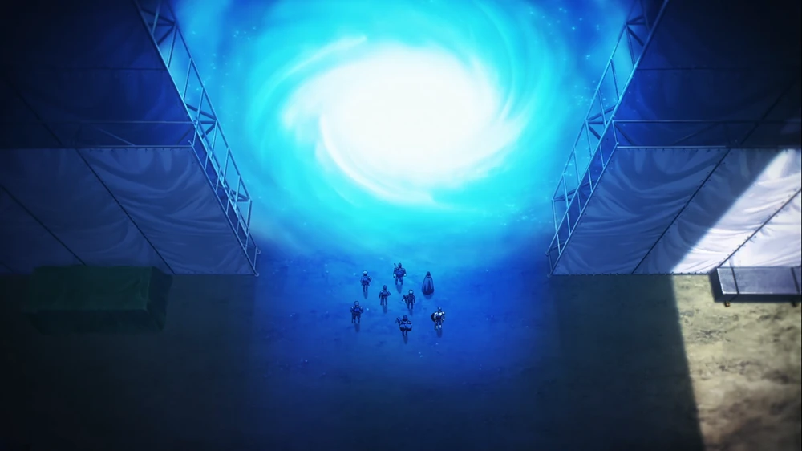
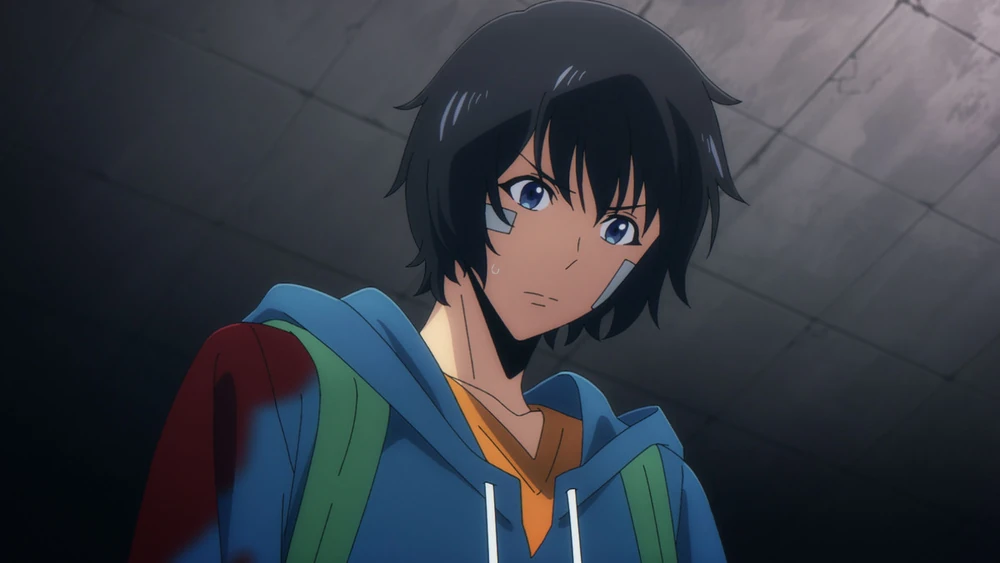
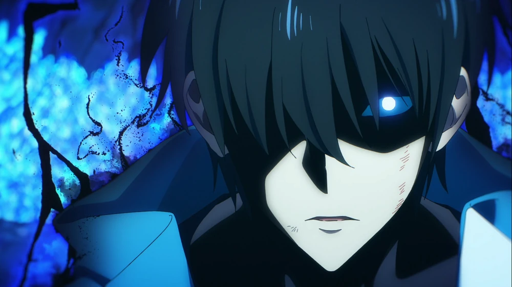
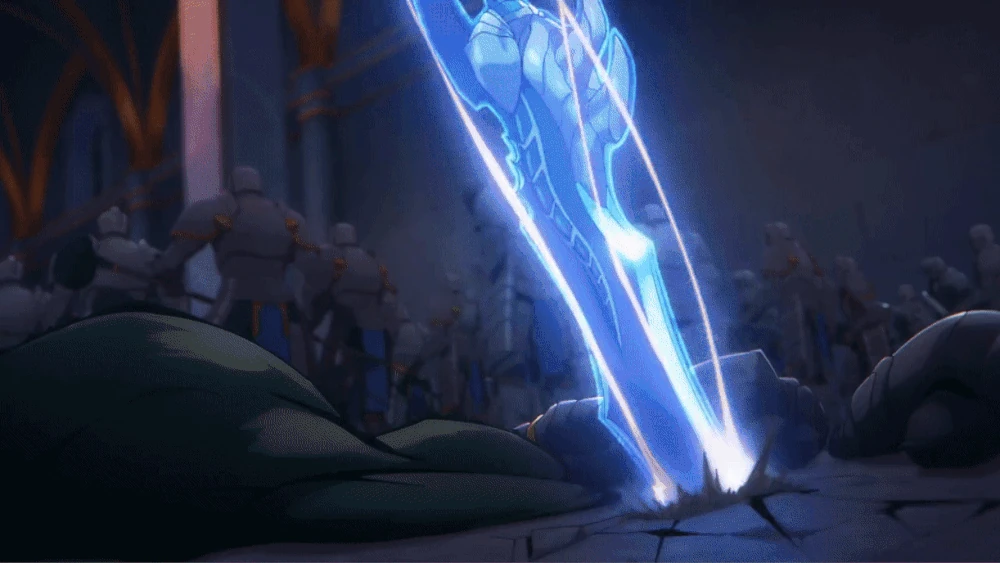
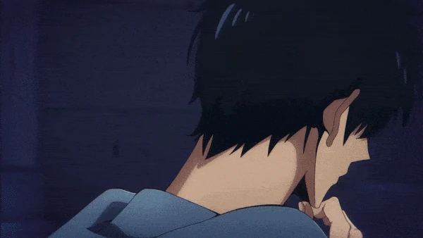

O Inicio:
A história segue Sung Jinwoo, um caçador de Rank E — considerado o mais fraco entre todos. Constantemente ferido em missões simples e subestimado por seus pares, Jinwoo arrisca a vida apenas para sustentar sua família.
Tudo muda quando ele entra em uma dungeon dupla, onde uma emboscada brutal elimina a maioria dos caçadores. À beira da morte, Jinwoo recebe uma mensagem misteriosa do "Sistema", que o transforma em um Player — alguém que pode treinar, subir de nível e se tornar mais forte, como em um jogo.
A partir desse momento, ele trilha um caminho de poder nunca antes visto, enfrentando monstros, guildas, e até outras nações. Jinwoo supera seus próprios limites e descobre uma verdade oculta por trás dos portais, das sombras e do destino dos caçadores.
De caçador mais fraco da humanidade, ele se ergue como o Monarca das Sombras, desafiando deuses e monstros para proteger aqueles que ama — e reescrever o destino do mundo.
O Mundo dos Caçadores:
Há mais de uma década, portais começaram a surgir, conectando o mundo a dimensões diferentes. Essas dimensões são habitadas por monstros que podem ser encontrados em masmorras dentro dos portais.

Sung Jinwoo:
Ele é um caçador de classe E, o mais baixo nível, que é constantemente derrotado e negligenciado por sua fraqueza.

O Despertar:
Durante uma missão perigosa em uma masmorra, Sung Jinwoo quase morre, mas em vez disso, ele é escolhido por um sistema misterioso. Este sistema lhe concede habilidades únicas e o permite subir de nível após cada batalha.

O Crescimento:
Sung Jinwoo, agora com habilidades extraordinárias, começa a se destacar como o caçador mais forte do mundo, desafiando a lógica de seu mundo e a ameaça que ele e seus companheiros caçadores representam para os monstros, principalmente os "Monarcas" e os "Governnantes".

Os Monarcas e os Governantes:
A história também apresenta os Monarcas e os Governantes, seres poderosos que são rivais e responsáveis por criar e controlar os monstros.
A Guerra Entre Monarcas e Governantes:
A história segue as aventuras de Sung Jinwoo enquanto ele enfrenta desafios e luta para proteger a humanidade da ameaça dos Monarcas, que querem destruir a humanidade.
O Despertar Final:
Sung Jinwoo continua evoluindo, descobrindo novos poderes e habilidades que o tornam uma força ainda maior, enfrentando os maiores desafios do universo.

Resumo
Em resumo, Solo Leveling é uma história de um personagem que, de fraco e insignificante, se torna um caçador de classe S, o mais forte do mundo, lutando contra monstros, Monarcas e outros perigos para proteger a humanidade e descobrir os segredos de seu próprio poder.